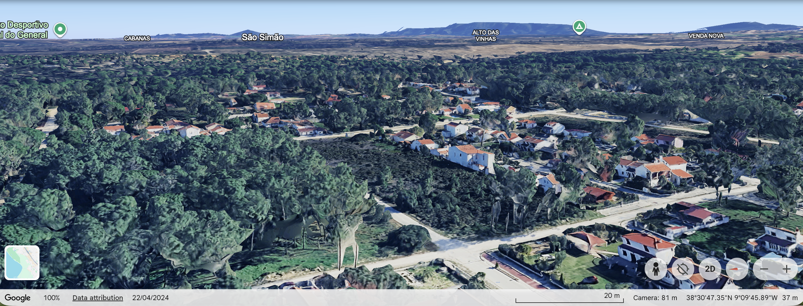
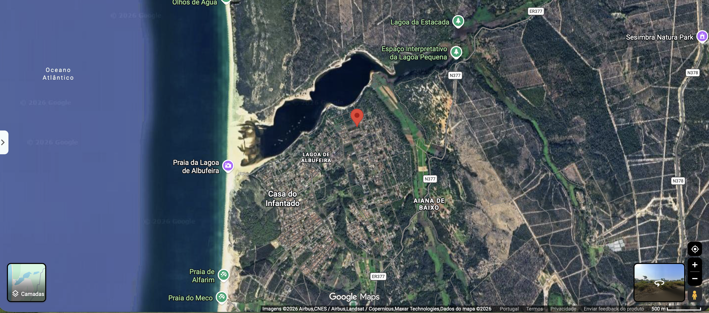
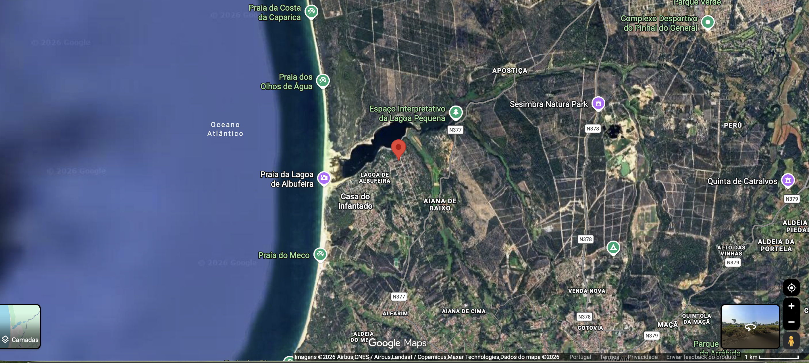

Paleta cromática — P2
5 cores do lugar. Selecionar uma cor para ver a imagem de referência.


GRUPO 8 — SESIMBRA E SETÚBAL
Índice
P1 — Enquadramento NUTS · socioeconomia P2 — Leitura do lugar imagem base e registo próprio P3 — Caracterização climática EPW · IPMA · Csb P4 — Cultura arquitetónica território P5 — SWOT matriz P6 — Proposta volumetria · programa
Conceito — síntese P1
Charneira atlântica Arrábida–Espichel: conter a expansão, ancorar o valor metropolitano na paisagem protegida.
Índice
Conteúdo da análise de sítio. Estrutura geral, a completar à medida do desenvolvimento do projeto.
P1 — Enquadramento NUTS e caracterização socioeconómica
NUTS I: Continente. NUTS II: Península de Setúbal PT172 (Regulamento Delegado UE 2023/674, desde 01/01/2024). NUTS III coincidente. 9 municípios: Alcochete, Almada, Barreiro, Moita, Montijo, Palmela, Seixal, Sesimbra, Setúbal. Função regional: sul metropolitano de Lisboa — porto, logística/indústria, turismo-natureza, expansão residencial.
| Indicador | Sesimbra | Setúbal |
|---|---|---|
| Área | 195,47 km² (CAOP/DGT) | 230,33 km² (CM Setúbal) |
| Pop. 2021 (Censos) | 52 394 hab. | 123 496 hab. |
| Pop. 2024 (INE 0012918) | 56 576 hab. | 124 339 hab. |
| Variação 2011–2021 | +5,8% (49 500 → 52 384) | +1,9% (121 185 → 123 496) |
| Envelhecimento 2021 | 136,5 | 162,7 (PT 182,1) |
| Densidade | ~268 hab/km² | 536,2 hab/km² |
| Escolaridade | Secundário 85,8% (2022/23) | Analfabetismo 2,6% (2021) |
| Poder compra 2023 (PT=100) | <100 | >100 (G. Lisboa 127,6) |
Fontes: INE 0011866, 0012918, Censos 2021, EPCC 2025 (0014580); Pordata 390, 458, 207, 222/835 (fonte primária INE). Coordenadas: 38,5133°N e 9,1604°W verificadas por conversão DMS→decimal; altitude 27 m plausível, erro típico ±2–5 m.
1. NUTS II = NUTS III desde 2024.
2. Sesimbra cresce mais (+5,8%) que Setúbal (+1,9%).
3. Envelhecimento contido: 136,5 vs 162,7 vs 182,1 PT.
4. Setúbal denso (536,2); Sesimbra difuso (~268).
5. Poder de compra fraturado: Sesimbra <100, Setúbal >100.
P2 — Leitura do lugar: imagem base e registo próprio
Margem N da Lagoa de Albufeira (Aiana de Baixo / Casa do Infantado). N377 a E, Atlântico a W (~400–600 m). Ortofoto oblíqua 22/04/2024. Sem fotografias próprias do sítio.


Figura-fundo (P2): tapete de pinhal contínuo perfurado por clareiras de moradias em grelha N-S; fundo de floresta-duna-lagoa-mar. A 1 km: lagoa a N, oceano a W, N377 a E.
Verde-pinheiro, ocre-areia, terracota, branco, azul-negro.
Areias pliocénicas, dunas, arriba fóssil, aluviões. Infiltração alta, erodíveis, freático alto.
Pinhal bravo, zimbral, dunas, caniçal. ZEC 4318 ha + ZPE + Ramsar. Espécies: Armeria rouyana, cágado, boga-portuguesa, aves da Lagoa Pequena.
Intensidade máx. X Mercalli. Referência 6,1 Richter / VII MM.
Sem risco elevado direto (PULA); cota 27 m. Condicionantes REN e galgamento costeiro.
Interface urbano-florestal. Sesimbra: 658 ha alto + 2706 ha muito alto. Regime APPS.
Fontes difusas: N377/N378, sazonalidade, fossas antigas. Sem indústria pesada visível.
Espaço Interpretativo, Natura Park, praias. Sem escola/saúde a 500 m; Aiana 2–4 km, Sesimbra 8–12 km.
Moradias isoladas 1–2 pisos, paredes brancas, telha cerâmica, muros baixos, loteamentos 1970–90.
Não verificável sem vistoria: idade, sistema construtivo, patologia.
Pistas de projeto P2
Faixa de bosque-comum junto à lagoa (corta-fogo/cheia): passadiço, charco, observatório. Construir a S.
Tipologia térrea em L em torno do pinhal existente; fundação leve; cisterna e fossa ecológica.
Acalmia de via, SuDS, iluminação âmbar, ligação praia–lagoa–N377 a pé/bici.
P3 — Caracterização climática (EPW × IPMA × Csb)
Estação Lisboa-Geofísico 535 (77 m), a ~22,9 km, Δalt +50 m. Normal IPMA 1991–2020 + EPW TMY 1990–2023 + Köppen-Geiger Csb (verão seco temperado; inverno húmido suave).
Pico início–meados agosto. Ago TT 23,8 / TX 28,8 / TN 18,8. Extremo 43,3 °C (04/08/2018).
N 42,6% + NW 31,6% (Jun–Set), média 4,1 m/s. Atravessamento N↔S.
Ano IPMA 793,5 mm (Nov–Jan concentrado); TMY 364 mm — não usar EPW para água. Jul 2,6 mm; Ago 5,4 mm.
TN Jan 8,6 °C; TN<0: 0 dias/ano. Sem geada. Amplitude dia-noite 10–12 K.
Necessário Mai–Set; crítico 29 Jun–15 Set. 110,6 dias TX≥25/ano; 33,2 dias TX≥30.
Lagoa-pinhal-mar: tardes −1–2 K, noites húmidas + nevoeiro. Não aplicar ilha de calor de Lisboa.
Profundidade ≤7 m; massa a E; vidro a S com pala e a N para brisa; W ≤10% com brise; beiral 80 cm; telha ventilada clara.
Planta em L; quartos a E, estar a S, serviços a W; cisterna sob pátio; sem subsolo.
Divergências: mês mais chuvoso Mar (TMY) vs Nov (Normal); médias ±0,3–1,1 K. Não verificável: vento/humidade à escala do lote, brisa horária, sombra dos pinheiros.
P4 — Cultura arquitetónica do território
Caiar + telha + vãos pequenos. Ex.: casario da Santiago, Sesimbra.
arrabidaparquemarinho.ualg.pt · patrimonios.pt
Construção dunar leve (estorno/tabuado). Ex.: Fonte da Telha, Castelo.
Fonte secundária; a confirmar em Oliveira & Galhano.
Quinta-pátio com tanque e pérgola. Ex.: Quinta da Bacalhôa, Azeitão (MN).
e-cultura.pt · DGPC 70212
Convento de Jesus, Setúbal — Carrilho da Graça — reabertura 2024. Reabilitação 2012–2024. Prémio Ruy d’Athouguia 2026.
noticias.mun-setubal.pt
Casa em Sesimbra — ARX Portugal — ano n/c. Mantém figura planimétrica; piso enterrado; cobertura-terreno.
arx.pt/projecto/casa-em-sesimbra
Reuso mínimo + museografia do mar. Ex.: Museu Marítimo de Sesimbra (nomeado EMYA 2021) e Convento de Jesus 2024.
P5 — SWOT
Matriz 2×4. Dois pontos por quadrante; dois pontos decorrem de indicadores P1 (valor e ano entre parênteses).
Prancha vetorial válida (P6): imagens/SWOT_P5_16x9.svg, 1920×1080.
P6 — Volumetria e programa preliminar
+ Atravessa a Nortada; pala S resolve o pico de calor.
− Frente W longa; faixa corta-fogo maior.
+ Pátio sombreado e ventilado a N-NW; preserva pinheiro.
− Risco de retenção de calor/humidade; gestão de fogo.
| Espaço (hipótese ~350 m²) | m² | un. | Nota |
|---|---|---|---|
| Fogo T2 pátio | 65 | 3 = 195 | E massa, S pala, N brisa |
| Estúdio investigador | 35 | 1 = 35 | W tampão |
| Sala comum + copa | 60 | 1 = 60 | S pérgola, tanque |
| Receção / loja / saúde | 25 | 1 = 25 | mínimo diário |
| Apoio / ETAR / cisterna | 35 | — | sem subsolo |
| Exterior: pátio / bosque / observatório | 300–500 | buffer lagoa | |
| Estacionamento 4 + bikes + água DFCI | — | 4 | 2 acessos |
Limite do lote e índice PDM/REN/APPS/ZEC; Vs30; água e saneamento; sombra/vento reais; procura e preço; gestão sazonal e fogo.
1. Pinheiros, muros, cotas, fossas, acessos e faixa de gestão.
2. Freático, marcas de cheia, solo, brisa tarde vs manhã.
3. Uso da rua, ruído N377, serviços em Aiana/Alfarim.
Grupo 8 — Documento de trabalho
Análise de sítio P1–P6. Sesimbra e Setúbal. 38.5133° N, 9.1604° W, 27 m. Grupo 8: Isabella Misiec (20221001) · Nuno Heleno (20181310) · Giovanna Meneghel (20221006). Documento a atualizar à medida do projeto.
O grupo 8 declara ter utilizado o Muse Spark 1.3 Free nos prompts P0–P6, em setembro de 2026. Foram anexadas quatro imagens, ficheiro EPW Lisboa-Geof e ficha IPMA Lisboa / Instituto Geofísico 1991–2020. Foram verificados o sítio e as coordenadas, os dados climáticos do IPMA, a classificação Köppen-Geiger e os dados INE/Pordata. Foram rejeitados ou assinalados como não verificáveis os dados para os quais não foi possível confirmar uma fonte adequada. Tempo estimado de aceleração face ao procedimento manual: 2 h. Os signatários assumem integralmente a autoria.
Isabella Misiec (20221001) · Nuno Heleno (20181310) · Giovanna Meneghel (20221006) — setembro de 2026.